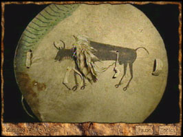

Art of the Americas
(c)
Location: Art of the Americas Gallery, 3rd floor
This interactive program features eight presentations about the Institute's collection of Native American art. It provides thematic context for several objects, including a Northwest Coast Raven Rattle, a Plains Indian painted shield, and the work of contemporary artist George Morrison.

Send comments to the webmaster.